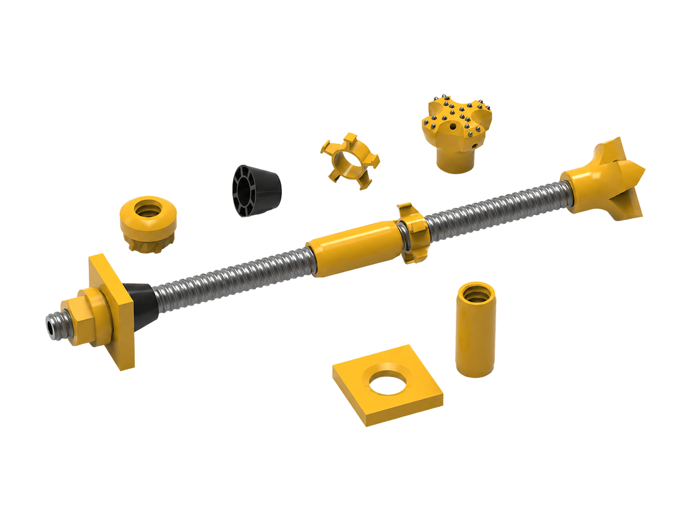

T Thread Self Drilling Anchor Bolt System
Description：
T thread self-drilling rock bolts, a wide range of diameter, and more powerful support. Widely used in complicated, loose, narrow spaces and broken geological conditions.
INTRODUCTION
As an efficient anchoring method, self drilling rock bolt is used in complicated, loose and broken geological condition. It’s widely applied to pre-support project, radial support project, slope stabilization, foundation support project, roadway support project, soil nail wall, back pull anchor rod retaining wall and other rock supporting work.
Functions:
Self drilling rock bolt system is an advanced system which can ensure the anchoring effect for complex ground conditions. It can be integrated with the functions of drilling, grouting and anchoring.
Conditions:
Self drilling rock bolt system is mainly used for slope stabilization, foundation with micropiles and tunneling, it’s also widely used in the railway system, metro project, etc. It can be installed in sites with weak rocks, loose soil, weathered layer, sand with stone layer and so difficult to create a hole in complex formation. The unconsolidated ground condition favor the self drilling anchor bolt technique for fast and simple method of installed compared to the traditional method.
Featurs and Advantages
1. It features a hollow bore for flushing, or simultaneous drilling and grouting.
2. Reliable, Efficient and Convenient.
3. Choice of drill bits for different ground conditions.
4. It can be elongated by using couplers.
5. Suitable for anchoring in broken geological condition and narrow space, which has achieved perfect effect.
Construction Process:

Application
Hot dip galvanizing anchor bolt is especially suitable for various acid, alkali mist and other corrosive environments, as well as occasions with longer service life requirements and complex environments in geotechnical engineering.
| Size | Outer Dia. (mm) | Ultimate Load (kN) | Yield Load (kN) | Weight (kg/m) |
|---|---|---|---|---|
| SXR25N | 25 | 200 | 140 | 2.55 |
| SXR32N | 32 | 280 | 200 | 3.5 |
| SXR32N1 | 32 | 320 | 220 | 4.1 |
| SXR32S | 32 | 360 | 250 | 4.4 |
| SXR38L | 38 | 400 | 280 | 5 |
| SXR38N | 38 | 500 | 350 | 6.15 |
| SXR38S | 38 | 550 | 380 | 6.5 |
| SXR51L | 51 | 550 | 380 | 6.8 |
| SXR51N | 51 | 660 | 460 | 8.2 |
| SXR51S | 51 | 800 | 560 | 9.9 |
| SXT30N | 30 | 280 | 200 | 3.6 |
| SXT40N | 40 | 539 | 380 | 6.9 |
| SXT52N | 52 | 780 | 540 | 10 |
| Size | Outer Dia. (mm) | Length (mm) | Weight (kg/pc) |
|---|---|---|---|
| SXR25 | 38 | 140 | 0.75 |
| SXR32 | 44 | 150 | 0.94 |
| SXR32 | 44 | 160 | 1 |
| SXR38 | 54 | 180 | 1.76 |
| SXR38 | 54 | 200 | 1.96 |
| SXR51 | 70 | 220 | 3.58 |
| SXT30 | 45 | 105 | 0.77 |
| SXT40 | 54 | 160 | 1.33 |
| SXT52 | 70 | 200 | 3.25 |
| Size | Key Size (mm) | Length (mm) | Weight (kg/pc) |
|---|---|---|---|
| SXR25 | 40 | 60 | 0.48 |
| SXR32 | 50 | 70 | 0.8 |
| SXR38 | 60 | 80 | 1.36 |
| SXR38 | 60 | 90 | 1.53 |
| SXR51 | 80 | 100 | 3.03 |
| SXT30 | 50 | 60 | 0.74 |
| SXT40 | 65 | 85 | 1.75 |
| SXT52 | 80 | 100 | 3.04 |
| Size | Dimensions (mm) | Thickness (mm) | Hole Dia. (mm) | Weight (kg/pc) |
|---|---|---|---|---|
| SXR32 | 200×200 | 12 | 35 | 3.76 |
| SXR32 | 150×150 | 10 | 36 | 1.71 |
| SXR38 | 200×200 | 12 | 41 | 3.74 |
| SXR51 | 200×200 | 14 | 55 | 4.2 |
| SXT30 | 200×200 | 8 | 36 | 2.49 |
| SXT40 | 150×150 | 20 | 56 | 3.2 |
| SXT52 | 150×150 | 25 | 65 | 3.83 |
Get in Touch with NASPS
Collaboration, Work Enquires or Just Say Hello.
Drop us a line